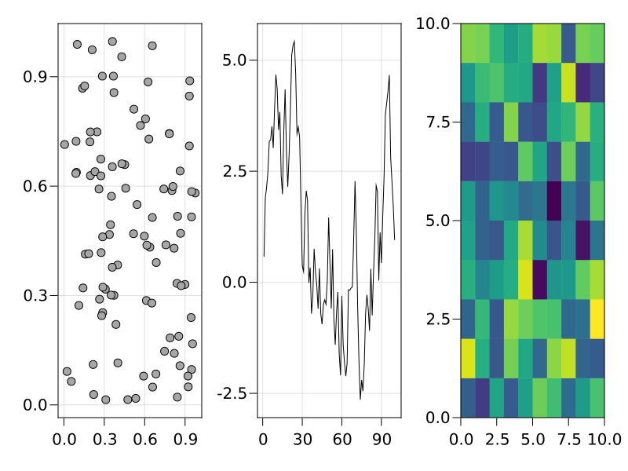
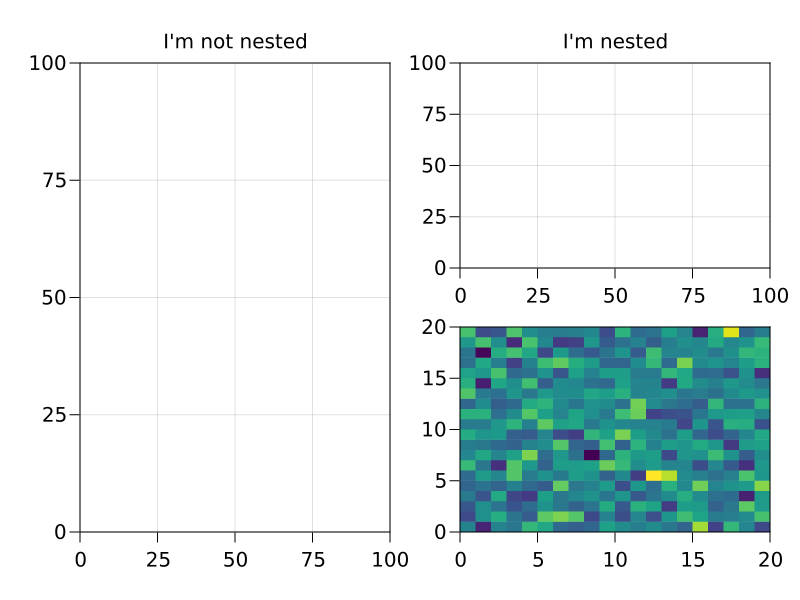

Figure
The Figure object contains a top-level Scene and a GridLayout, as well as a list of layoutables that have been placed into it, like Axis, Colorbar, Slider, Legend, etc.
Wherever you see the old scene, layout = layoutscene() workflow from MakieLayout, you can imagine that the Figure takes over the role of both scene and layout, plus additional conveniences like keeping track of layoutables.
Creating A Figure
You can create a figure explicitly with the Figure() function, and set attributes of the underlying scene. The most important one of which is the resolution.
f = Figure()
f = Figure(resolution = (600, 400))A figure is also created implicitly when you use simple, non-mutating plotting commands like plot(), scatter(), lines(), etc. Because these commands also create an axis for the plot to live in and the plot itself, they return a compound object FigureAxisPlot, which just stores these three parts. To access the figure you can either destructure that object into its three parts or access the figure field directly.
figureaxisplot = scatter(rand(100, 2))
figure = figureaxisplot.figure
# destructuring syntax
figure, axis, plot = scatter(rand(100, 2))
# you can also ignore components
figure, _ = scatter(rand(100, 2))You can pass arguments to the created figure in a dict-like object to the special figure keyword:
scatter(rand(100, 2), figure = (resolution = (600, 400),))Placing Layoutables Into A Figure
All layoutables take their parent figure as the first argument, then you can place them in the figure layout via indexing syntax.
f = Figure()
ax = f[1, 1] = Axis(f)
sl = f[2, 1] = Slider(f)FigurePositions and FigureSubpositions
The indexing syntax of Figure is implemented to work seamlessly with layouting. If you index into the figure, a FigurePosition object that stores this indexing operation is created. This object can be used to plot a new axis into a certain layout position in the figure, for example like this:
using CairoMakie
f = Figure(resolution = (800, 600))
pos = f[1, 1]
scatter(pos, rand(100, 2))
pos2 = f[1, 2]
lines(pos2, cumsum(randn(100)))
# you don't have to store the position in a variable first, of course
heatmap(f[1, 3], randn(10, 10))
f
You can also index further into a FigurePosition, which creates a FigureSubposition. With FigureSubpositions you can describe positions in arbitrarily nested grid layouts. Often, a desired plot layout can only be achieved with nesting, and repeatedly indexing makes this easy.
using CairoMakie
f = Figure(resolution = (800, 600))
f[1, 1] = Axis(f, title = "I'm not nested")
f[1, 2][1, 1] = Axis(f, title = "I'm nested")
# plotting into nested positions also works
heatmap(f[1, 2][2, 1], randn(20, 20))
f
All nested grid layouts that don't exist yet, but are needed for a nested plotting call, are created in the background automatically.
The GridLayouts that are implicitly created when using FigureSubpositions are not directly available in the return value for further manipulation. You can instead retrieve them after the fact with the content function, for example, as explained in the following section.
Retrieving Objects From A Figure
Sometimes users are surprised that indexing into a figure does not retrieve the object placed at that position. This is because the FigurePosition is needed for plotting, and returning content objects directly would take away that possibility. Furthermore, a GridLayout can hold multiple objects at the same position, or have partially overlapping content, so it's not well-defined what should be returned given a certain index.
To retrieve objects from a Figure you can instead use indexing plus the contents or content functions. The contents function returns a Vector of all objects found at the given FigurePosition. You can use the exact = true keyword argument so that the position has to match exactly, otherwise objects contained in that position are also returned.
f = Figure()
box = f[1:3, 1:2] = Box(f)
ax = f[1, 1] = Axis(f)
contents(f[1, 1]) == [ax]
contents(f[1:3, 1:2]) == [box, ax]
contents(f[1:3, 1:2], exact = true) == [box]If you use contents on a FigureSubposition, the exact keyword only refers to the lowest-level grid layout, all upper levels have to match exactly.
f = Figure()
ax = f[1, 1][2, 3] = Axis(f)
contents(f[1, 1][2, 3]) == [ax]
contents(f[1:2, 1:2][2, 3]) == [] # the upper level has to match exactlyOften, you will expect only one object at a certain position and you want to work directly with it, without retrieving it from the Vector returned by contents. In that case, use the content function instead. It works equivalently to only(contents(pos, exact = true)), so it errors if it can't return exactly one object from an exact given position.
f = Figure()
ax = f[1, 1] = Axis(f)
contents(f[1, 1]) == [ax]
content(f[1, 1]) == ax